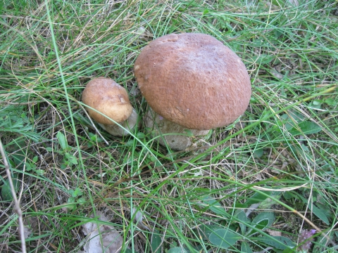

Borowik szlachetny (łac. Boletus edulis Bull.) potocznie nazywany jest prawdziwkiem. Występuje w Europie i Ameryce Północnej. W Polsce często spotykany zwłaszcza w górach, rzadziej na niżu, zwykle rzadki w okolicach wielkich miast.
Borowik jest aromatycznym grzybem jadalny o dużym zastosowaniu w kuchniach europejskich. Nadaje się do bezpośredniego spożycia, marynowania, suszenia i do wszelkich innych rodzajów przerobu.
